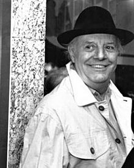

Dario Fo [1926 - 2016]
Dario Fo [Sinh 1926 - 2016] tác giả hài kịch kiêm diễn viên người Ý, đã được tặng giải Nobel Văn học 1997 theo công bố hôm 9/10 tại Stockholm và lập tức đã bị ném vào cơn xoáy lốc của những tranh cãi, bối rối và cả phẫn nộ qua sự chọn lựa bất ngờ của ban giám khảo.
Năm nay 71 tuổi, Dario Fo đã được Viện Hàn lâm Thụy Điển tôn vinh về sự nghiệp ganh đua của ông với “những vai hề cung đình thời Trung cổ trong việc nguyền rủa quyền bính và đề cao phẩm giá của những con người bị chà đạp”.
Trong một khung cảnh xem ra như thể đã phát xuất từ một trong những vở kịch của ông, Fo nói rằng ông đã “sửng sốt” khi được tin mình đoạt giải này trong khi đang trên đường xa lộ từ Roma đến Milan.
Thực tế, ông là một nhân vật hàng đầu của thể loại kịch hài và chính trị hiện đại nhưng đã không hề được coi là sẽ nhận được giải thưởng uy tín này. Toàn tập kịch của ông có tới 70 vở trong đó ông thường nói bóng nói gió đến những vai hề cung đình thời Trung cổ và những trò hài cũng như những điều bì ẩn của họ, chẳng hạn như trong vở kịch mang tính đột phá Mistero Buffo viết năm 1969. Những vở kịch của ông lấy cảm hứng từ nền kịch hài Ý dell’arte và các nhà văn thế kỷ XX như Vladimir Maiakovsky và Bertolt Brecht.
Quyết định trao giải Nobel cho ông, tuyên bố của Viện Hàn lâm Thụy Điển viết: “Trong nhiều năm Fo đã trình diễn khắp thế giới, có lẽ hơn bất cứ một kịch sĩ nào khác đương thời, và những ảnh hưởng của ông rất to lớn. Nếu bất kỳ ai xứng đáng với danh hiệu vai hề trong ý nghĩa thực sự của từ đó thì chính là ông”. Sức mạnh của ông, theo lời tuyên bố trên, “là ở việc sáng tác ra những vở kịch vừa vui nhộn, vừa dấn thân và đưa ra những viễn cảnh”.
“Giống như trong thể kịch hài dell’arte, những vở kịch này luôn luôn để ngỏ cho những thêm thắt sáng tạo và chuyển dịch, địa điểm câu chuyện, không ngừng khuyến khích các diễn viên ứng tác, điều đó có nghĩa là khán giả được huy động theo một cách rất đáng kể”.
Fo là người Ý thứ sáu đoạt giải Nobel Văn học. Ông khởi đầu với nghề diễn viên năm 1952 ở Milan sau khi theo học nghệ thuật và kiến trúc. Đánh giá về ông, ban giám khảo giải thưởng nhận xét: “Với sự hòa trộn giữa tiếng cười và sự nghiêm trang, ông mở mắt cho chúng ta thấy những sự lạm quyền và bất công trong xã hội và cả những viễn ảnh lịch sử rộng lớn hơn trong đó những chuyện như thế xảy ra. Như vậy Fo là một nhà hoạt kê hết sức nghiêm túc với một sự nghiệp phong phú về diện mạo”.
Và theo lời ban giám khảo, “Sự độc lập sáng suốt của ông đã khiến ông chấp nhận những hiểm họa lớn lao với những hậu quả mà người ta có thể thấy được và đồng thời ông đã từng được hết sức hoan nghênh từ mọi tầng lớn dân cư khác nhau”.
Ông đã từng bị cấm, bị kiểm duyệt, bị thóa mạ và bị Mỹ từ chối cấp visa, tuy nhiên có đến hàng chục vở kịch của ông đã được dịch ra hàng chục thứ tiếng và trình diễn tại các rạp hát kín người khắp thế giới. Ông cũng có lần suýt là nạn nhân của một vụ bắt cóc nếu cảnh sát không can thiệp kịp thời.
Sự đối lập của ông đối với chủ nghĩa tuân thủ, sự dũng cảm về những niềm tin của mình, và sự dấn thân của ông về chính trị và xã hội, đã khiến ông dính líu đến nhiều vụ xét xử và những cuộc tranh cãi với nhà nước Ý, cảnh sát, nhà kiểm duyệt, truyền hình và cả Tòa thánh Vatican (Giáo Hoàng cho là vở kịch Mistero Buffo đã xúc phạm đến tình cảm tôn giáo của người Ý).
Vào năm 1980, là một thành viên của Đảng cộng sản Tái lập của Ý, ông đã bị Mỹ từ chối cấp visa sang nước này trình diễn với lý do ông có tên trong tổ chức Soccorso Rosso bênh vực tù nhân.
Trong những năm gần đây, cùng với vợ, nữ diễn viên kiêm nhà văn, bà Franca Rome, ông đã đề cập đến những chủ đề phụ nữ trong nhiều vở kịch - tác phẩm mới nhất Quỷ dữ với bộ ngực đàn bà là một vở hài lấy bối cảnh thời Phục hưng và những nhân vật chính là một ông chánh án bốc lửa và một người đã đưa tác phẩm mình theo kịp với những vấn đề nóng hổi của thời đại.
Ngay sau khi giải Nobel được công bố, dư luận đã bùng lên quanh chuyện chọn lựa ông để trao giải. Tòa thánh Vatican cũng tuyên bố hết sức sửng sốt về chuyện này. Tờ báo của Vatican, L’Osertore Romano, viết: “...Trao giải cho một kẻ đồng thời là tác giả của những tác phẩm có vấn đề quả là việc ngoài sức tưởng tượng”.
Trong khi đó nhà thơ nữ Ba Lan Wislawa Szymborska, người đoạt giải Nobel Văn học 1996, đã lên tiếng chúc mừng và cầu mong Dario Fo sẽ có sức chịu đựng và bền bỉ đối phó với những thử thách của việc nổi tiếng.
“Ngoài những lời chúc tốt đẹp nhất từ trái tim, tôi còn chúc ông đầy đủ sức khỏe, sức chịu đựng và sự nhẫn nại, vì ông sẽ có một năm tới rất khó khăn”, nhà thơ nữ, vốn ngại ra mắt công chúng và coi sự nổi tiếng là một gánh nặng, đã nói thế.